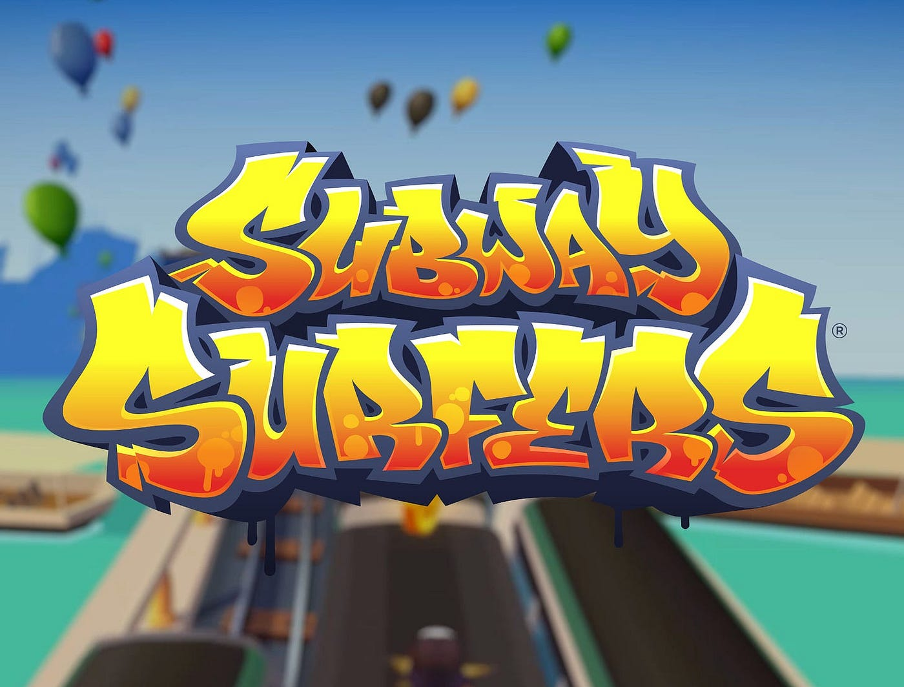

Los personajes principales

Jake
El personaje principal, en el que cada jugador desbloquea al instalar el juego

Tricky
Uno de los personajes que la mayoria de los juegadores desbloquea con facilidad. Es otro de los personajes principales
Fresh
Se cree que es el mejor amigo de Jake. No es tan accesible para los usuarios, pero al desbloquearlo, se alcanza una mejor experiencia en el juego